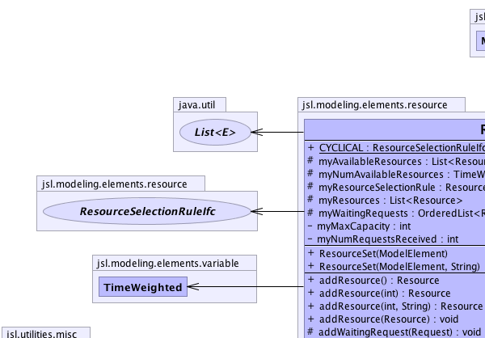
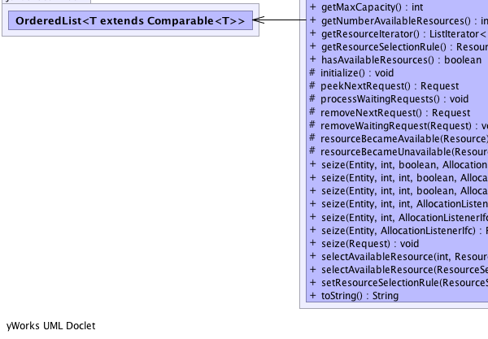
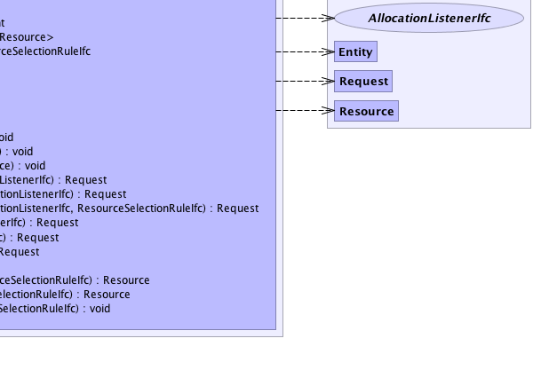

jsl.modeling.ModelElement
jsl.modeling.elements.resource.ResourceSet
jsl.modeling.ModelElement
jsl.modeling.elements.resource.ResourceSet
|
||||||||||
| PREV CLASS NEXT CLASS | FRAMES NO FRAMES | |||||||||
| SUMMARY: NESTED | FIELD | CONSTR | METHOD | DETAIL: FIELD | CONSTR | METHOD | |||||||||
java.lang.Object
public class ResourceSet
A ResourceSet holds a set of resources so that they can be selected for allocation via a ResouceSelectionRuleIfc. A ResouceSet can have many resources and a resource can be in many resource sets. The selectIdleResource(Request r) method uses the ResourceSelectionRuleIfc (if provided) to select the next idle resource for a request. The default is to cycle through the resources to select the resources in the order in which they were released.
|  |  |
|  |  |
| Nested Class Summary |
|---|
| Nested classes/interfaces inherited from class jsl.modeling.ModelElement |
|---|
ModelElement.TimedUpdateEventAction, ModelElement.WarmUpEventAction |
| Field Summary | |
|---|---|
static ResourceSelectionRuleIfc |
CYCLICAL
|
protected java.util.List<Resource> |
myAvailableResources
|
private int |
myMaxCapacity
|
protected TimeWeighted |
myNumAvailableResources
|
private int |
myNumRequestsReceived
Counts the number of requests that the resource received |
protected java.util.List<Resource> |
myResources
|
protected ResourceSelectionRuleIfc |
myResourceSelectionRule
|
protected OrderedList<Request> |
myWaitingRequests
|
| Constructor Summary | |
|---|---|
ResourceSet(ModelElement parent)
Creates a resource set with the given model element as a parent and assigned a default name. |
|
ResourceSet(ModelElement parent,
java.lang.String name)
Creates a resource set with the given model element as a parent and the given name. |
|
| Method Summary | |
|---|---|
Resource |
addResource()
Creates and adds a resource to the set |
Resource |
addResource(int capacity)
Creates and adds a resource to the set |
Resource |
addResource(int capacity,
java.lang.String name)
Creates and adds a resource to the set |
void |
addResource(Resource resource)
Adds a resource to the set. |
protected void |
addWaitingRequest(Request request)
Adds the request to the list of waiting requests based on the Comparable interface for Request |
int |
getMaxCapacity()
|
int |
getNumberAvailableResources()
Returns the current number of idle resources in the set |
java.util.ListIterator<Resource> |
getResourceIterator()
Returns an iterator to the resources in this set |
ResourceSelectionRuleIfc |
getResourceSelectionRule()
Returns the current resource selection rule or null if none |
boolean |
hasAvailableResources()
|
protected void |
initialize()
This method should be overridden by subclasses that need actions performed to initialize prior to a replication. |
protected Request |
peekNextRequest()
Returns the next request without removing it |
protected void |
processWaitingRequests()
This method processes any waiting requests whenever a resource within the set has notified the set that it has become available Any waiting requests have not previously used a resource because they wait if and only if a resource is not available from the set when they make their seize. |
protected Request |
removeNextRequest()
Removes the next request from the waiting list of requests |
protected void |
removeWaitingRequest(Request request)
Removes the request from the list of waiting requests |
protected void |
resourceBecameAvailable(Resource resource)
When a resource becomes available it needs to be added to the list of available resources |
protected void |
resourceBecameUnavailable(Resource resource)
If a resource within the set becomes unavailable (busy, failed, inactive) it should be removed from the potential list of availabe resources. |
Request |
seize(Entity entity,
AllocationListenerIfc listener)
|
Request |
seize(Entity entity,
int amtNeeded,
AllocationListenerIfc listener)
|
Request |
seize(Entity entity,
int amtNeeded,
boolean partialFillFlag,
AllocationListenerIfc listener)
|
Request |
seize(Entity entity,
int amtNeeded,
int priority,
AllocationListenerIfc listener)
|
Request |
seize(Entity entity,
int amtNeeded,
int priority,
boolean partialFillFlag,
AllocationListenerIfc listener)
|
Request |
seize(Entity entity,
int amtNeeded,
int priority,
boolean partialFillFlag,
AllocationListenerIfc listener,
ResourceSelectionRuleIfc rule)
|
void |
seize(Request request)
Seizes the resource using the request. |
Resource |
selectAvailableResource(int amtNeeded,
ResourceSelectionRuleIfc rule)
Returns the next available resource to be used for allocating to requests, null if none are found that can satisfy the request. |
Resource |
selectAvailableResource(ResourceSelectionRuleIfc rule)
Selects an available resource or null if none are available The default is to find the first available resource that has the maximum available units. |
void |
setResourceSelectionRule(ResourceSelectionRuleIfc rule)
Sets the resource selection rule. |
java.lang.String |
toString()
Returns the name of the class and the model element's name. |
| Methods inherited from class java.lang.Object |
|---|
clone, equals, finalize, getClass, hashCode, notify, notifyAll, wait, wait, wait |
| Field Detail |
|---|
public static final ResourceSelectionRuleIfc CYCLICAL
protected java.util.List<Resource> myResources
protected java.util.List<Resource> myAvailableResources
protected ResourceSelectionRuleIfc myResourceSelectionRule
protected TimeWeighted myNumAvailableResources
private int myMaxCapacity
protected OrderedList<Request> myWaitingRequests
private int myNumRequestsReceived
| Constructor Detail |
|---|
public ResourceSet(ModelElement parent)
parent -
public ResourceSet(ModelElement parent,
java.lang.String name)
parent - name - | Method Detail |
|---|
protected void initialize()
ModelElement
initialize in class ModelElementpublic final int getMaxCapacity()
public final Resource addResource()
resource -
public final Resource addResource(int capacity)
capacity -
public final Resource addResource(int capacity,
java.lang.String name)
capacity - name -
public final void addResource(Resource resource)
resource - public final java.util.ListIterator<Resource> getResourceIterator()
public Resource selectAvailableResource(int amtNeeded,
ResourceSelectionRuleIfc rule)
amtNeeded -
public Resource selectAvailableResource(ResourceSelectionRuleIfc rule)
protected void addWaitingRequest(Request request)
request - protected void removeWaitingRequest(Request request)
request - protected Request peekNextRequest()
protected Request removeNextRequest()
public final void seize(Request request)
SeizeIfc
seize in interface SeizeIfc
public final Request seize(Entity entity,
AllocationListenerIfc listener)
public final Request seize(Entity entity,
int amtNeeded,
int priority,
AllocationListenerIfc listener)
public final Request seize(Entity entity,
int amtNeeded,
AllocationListenerIfc listener)
public final Request seize(Entity entity,
int amtNeeded,
boolean partialFillFlag,
AllocationListenerIfc listener)
public final Request seize(Entity entity,
int amtNeeded,
int priority,
boolean partialFillFlag,
AllocationListenerIfc listener)
public final Request seize(Entity entity,
int amtNeeded,
int priority,
boolean partialFillFlag,
AllocationListenerIfc listener,
ResourceSelectionRuleIfc rule)
public final int getNumberAvailableResources()
public final boolean hasAvailableResources()
public java.lang.String toString()
ModelElement
toString in class ModelElementpublic final ResourceSelectionRuleIfc getResourceSelectionRule()
public final void setResourceSelectionRule(ResourceSelectionRuleIfc rule)
rule - protected void resourceBecameUnavailable(Resource resource)
resource - protected void resourceBecameAvailable(Resource resource)
resource - protected void processWaitingRequests()
|
||||||||||
| PREV CLASS NEXT CLASS | FRAMES NO FRAMES | |||||||||
| SUMMARY: NESTED | FIELD | CONSTR | METHOD | DETAIL: FIELD | CONSTR | METHOD | |||||||||